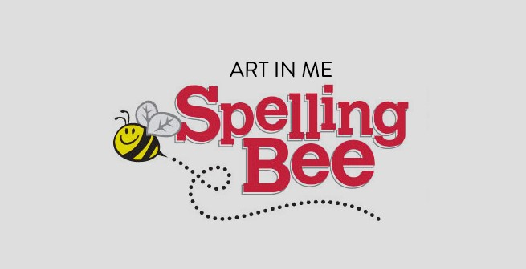
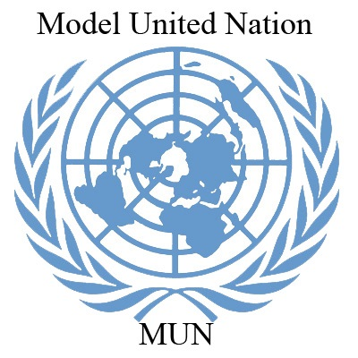

Clubs
What We actually do!

ALUMNI ASSOCIATION
About
An alumni association is an association of graduates or, more broadly, of former students. The purpose of this association is to foster the spirit of loyalty and to promote the general welfare of our institution. Alumni association helps in locating the missing alumni. Its influence and activities are of pivotal in the development of both the alumni community and the experience of today’s students.PURPOSE OF THE CLUB

LEAGUE OF WRITERS
About
The translation of human experience into an artful literary presentation is the art of writing. Writing is a careful craft that follows certain literary techniques and maintain field standards. Writers are creative geniuses. Writers club is a get together of all writers and writing enthusiasts in the college. This has added the benefit of opportunities to observe new people-great fodder for the individual writer’s observational brain.
PURPOSE OF THE CLUB
About
The translation of human experience into an artful literary presentation is the art of writing. Writing is a careful craft that follows certain literary techniques and maintain field standards. Writers are creative geniuses. Writers club is a get together of all writers and writing enthusiasts in the college. This has added the benefit of opportunities to observe new people-great fodder for the individual writer’s observational brain.PURPOSE OF THE CLUB

SPELL BEE
About
A Spell Bee is a competition in which the contestants are asked to spell a broad selection of words, usually with a varying degree of difficulty. Spell bee initiates students into the world of competitive learning, acting as an invaluable tool for language improvement. Further the club builds self-confidence and helps them to reach their full potential. The activity nature of the competition ensures the students rapt attention and utilize their aspirations for winning games.
PURPOSE OF THE CLUB
About
A Spell Bee is a competition in which the contestants are asked to spell a broad selection of words, usually with a varying degree of difficulty. Spell bee initiates students into the world of competitive learning, acting as an invaluable tool for language improvement. Further the club builds self-confidence and helps them to reach their full potential. The activity nature of the competition ensures the students rapt attention and utilize their aspirations for winning games.PURPOSE OF THE CLUB

GLOBAL LEADERS CONGRESS
About
Model United Nations, commonly known as Model UN or MUN, is an extra-curricular activity in which students typically role play delegates of the United Nations and simulate UN committees. This activity takes place at MUN conferences, which is usually organized by a high school or college MUN club. At the end of most conferences, outstanding delegates in each committee are recognized and given an award certificate; the best delegate in each committee however, receives a gavel. It is a way of learning about the world. In this era of globalization, being globally aware is more important than ever. It makes easier to learn something and more easily to stick.
PURPOSE OF THE CLUB
About
Model United Nations, commonly known as Model UN or MUN, is an extra-curricular activity in which students typically role play delegates of the United Nations and simulate UN committees. This activity takes place at MUN conferences, which is usually organized by a high school or college MUN club. At the end of most conferences, outstanding delegates in each committee are recognized and given an award certificate; the best delegate in each committee however, receives a gavel. It is a way of learning about the world. In this era of globalization, being globally aware is more important than ever. It makes easier to learn something and more easily to stick.PURPOSE OF THE CLUB

ENVIRONMENTAL CLUB
About
The club is dedicated to environmental issues. It campaigns for the improvement of the environment through activities such as planting trees, teaching recycling in colleges and schools, hiking, camping. The members also visit natural reserves and parks.PURPOSE OF THE CLUB

FINE ARTS CLUB
About
Fine Arts Club is a club that promotes all aspect of fine arts, including graphic design and visual art. The club presents art-related activities throughout the academic year. The goal of fine arts club is to bring an active awareness and appreciation of the fine arts on campus and in student community. Through the creative and intellectual stimulus of student-initiated events, it strives to engage, inspire and motivate everyone to participate in the fine arts.PURPOSE OF THE CLUB
ENTREPRENEUR CLUB
About
The entrepreneurs club is a student run initiative that engages and it inspires students to pursue their careers and life by doing what they love. It aims to bring together a diverse set of students who shares same thing; they desire to “Live their passion!” Whether they want to start a non-profit, be the CEO of a company, or open a small business, everyone is welcome to join in exploring the paths towards as an entrepreneur.PURPOSE OF THE CLUB